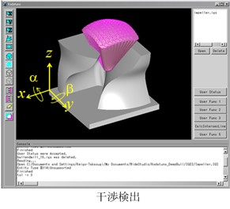

|
|
|
Prev
Index
Next |
アプリケーション実装例
Kodatunoを使ったアプリケーションの実装例として，ここでは以下の3つを紹介します．
- 3xM/C用CAM
実際のCAMの場合，加工面から工具の中心点へオフセットさせた点が工具経路となり，いろいろと工夫が必要ですが，基本的には， Kodatunoの関数を組み合わせることで実装可能です．
- リバースエンジニアリング
変位計などの，加工物の三次元座標値を測定する装置によって得られた点群データをNURBS補間することによって，補間曲面を得ることができます． この例では,5000点の測定点を補間する3次のNURBS補間曲面を生成しています．
- 工具と工作物の干渉検出
 この例では，1本のボールエンドミルを，工具中心点を支点として2方向に±30度振ったときの工作物との干渉の有無を見ています．ここでは，工具もNURBS曲面として 表現されており，NURBS曲面同士の干渉を検出する関数NURBS_Func::DetectInterfereTrmS()を用いています．
| Copyright(C) Kodatuno Development Team, 2011 | Last modified: Jan. 17, 2017 |